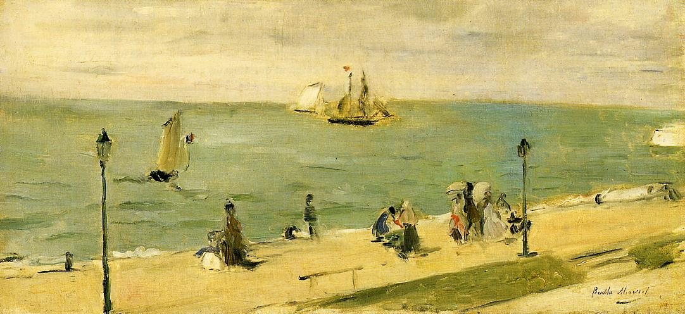

Tags: rivers-and-waterfalls, boats-and-ships
Style: Impressionism
Artist: Morisot Berthe
Title: The Beach at Petit Dalles (aka On the Beach)
Year: 1873
Genre: genre painting
Categories: crane (23.2%); seashore (20.3%); lakeside (10.7%); apiary (6.0%); pole (5.9%)